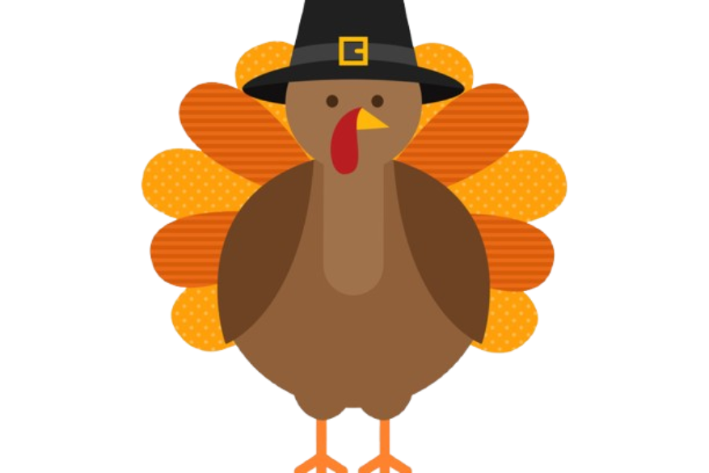

Happy Thanksgiving



Thanksgiving originated in 1621 when the Pilgrims, early English settlers in Plymouth, Massachusetts, held a feast to celebrate their successful harvest. They invited the Wampanoag people, who had helped them survive their first harsh winter, to join in the celebration. The event lasted three days and included feasting, games, and giving thanks for the harvest. While not originally an annual tradition, Thanksgiving became more widely observed over the years, with various dates set by different colonies. It was declared a national holiday by President Abraham Lincoln in 1863 during the Civil War, as a way to promote unity.